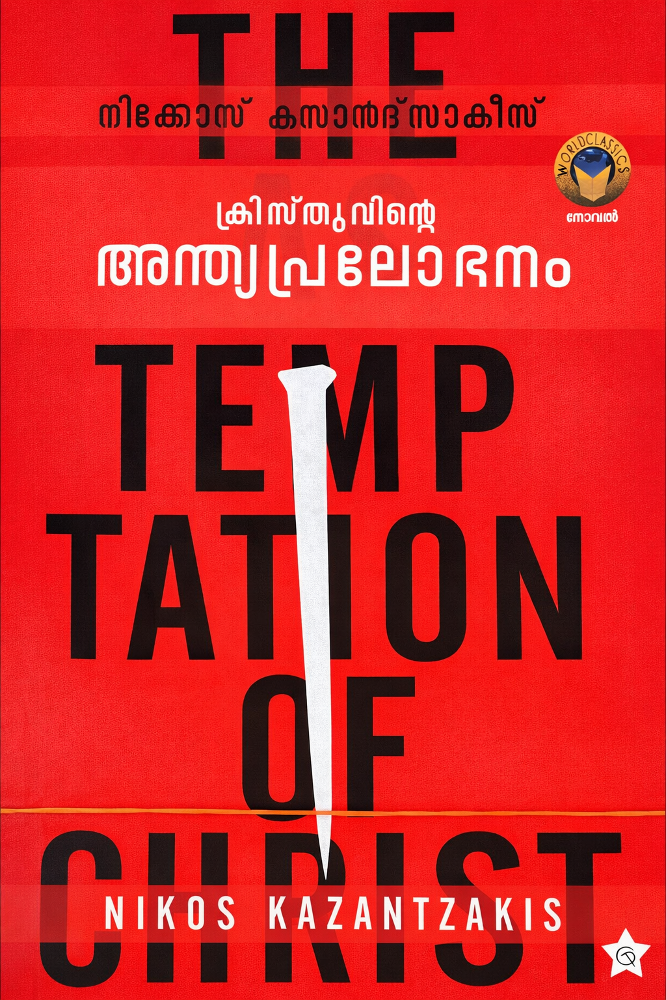

Author: നിക്കോസ് കസന്ത്സാക്കീസ്
Review by: ജോസഫ് പി മാത്യു
റോമക്കാർക്കുവേണ്ടി കുരിശുകൾ പണിയുന്ന മറിയത്തിന്റെ മകനിൽ നിന്ന് സ്നേഹത്തിന്റെ പുതിയ കൽപ്പന നല്കുന്ന മനുഷ്യപുത്രനിലേക്കുള്ള പരിണാമവും, ഒരിക്കലും യേശുവിനെ വിട്ടുപോകാതെ കൂടെ ഉണ്ടായിരുന്ന സന്ദേഹവും ഭയവും (കഴിയുമെങ്കിൽ ഈ പാനപാത്രം (കാസ!😜) എന്നിൽ നിന്ന് എടുത്തുമാറ്റണമേ എന്ന ഗെദ്സെമാൻ തോട്ടത്തിലെ പ്രാർത്ഥന ഓർക്കുക), പൗരോഹിത്യത്തിന് തന്നെ ഏല്പിച്ചുകൊടുക്കാൻ യൂദാസിനെ ഒരുക്കിയെടുക്കുന്നതും, ഒടുവിൽ കുരിശിൽ മരണത്തിനു തൊട്ടുമുൻപ് ഉണ്ടാകുന്ന വിഭ്രാന്തിയിൽ നേരിടുന്ന പ്രലോഭനവും (ഈ പ്രലോഭനത്തിൽ കുരിശിൽ തറയ്ക്കപ്പെടുന്നതിനു മുൻപ് കാവൽ മാലാഖ തന്നെ രക്ഷപെടുത്തി ആദ്യം മഗ്ദലനയുടേയും പിന്നീട് ബഥനിയിലെ മറിയത്തിന്റെയും മർത്തയുടെയും അടുത്തെത്തിക്കുന്നതും ബഥനിയിൽ വാർദ്ധക്യം വരെ കുടുംബജീവിതം നയിക്കുന്നതും യേശു അനുഭവിക്കുന്നുണ്ട്), പ്രലോഭനത്തെ അതിജീവിച്ച് തിരികെ കുരിശിലേക്കെത്തി “അത് പൂർത്തിയാക്കി” എന്ന പ്രസ്താവനയോടെ തന്റെ മരണത്തെ മഹത്വീകരിക്കുന്നതും (glorification) മനോഹരമായി ഈ നോവലിൽ പറഞ്ഞുവെച്ചിരിക്കുന്നു.
യേശു എന്ന ആശാരി പയ്യനിൽ നിന്ന് ക്രിസ്തു എന്ന ദൈവത്തിന്റെ മനുഷ്യപുത്രനിലേക്കുള്ള മഹത്വവൽക്കരണം ഒരു ദൈവിക പദ്ധതിയായിരുന്നു എന്ന് അടിവരയിട്ടു പറഞ്ഞ കസന്ത്സാക്കീസിനെ ഗ്രീക്ക് ഓർത്തഡോക്സ് സഭ പുറത്താക്കി എന്നത് ക്രിസ്തീയ മതമേലധികാരത്തിന് ഒരിടത്തും യഹൂദരുടേതിൽ നിന്ന് വ്യതിയാനം സംഭവിച്ചിട്ടില്ല എന്നതിന് മറ്റൊരു ഉദാഹരണമാണ്.
വായിച്ചിരിക്കേണ്ട ഒരു പുസ്തകമാണ് The Last Temptation of Christ.